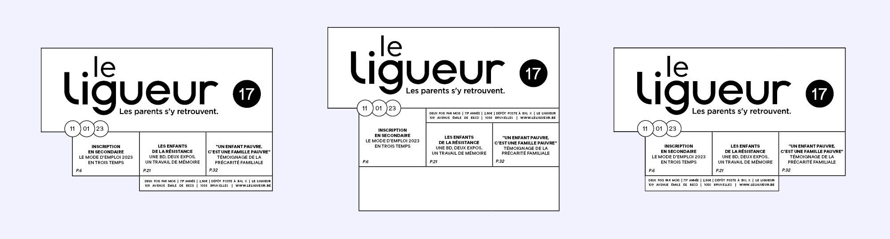
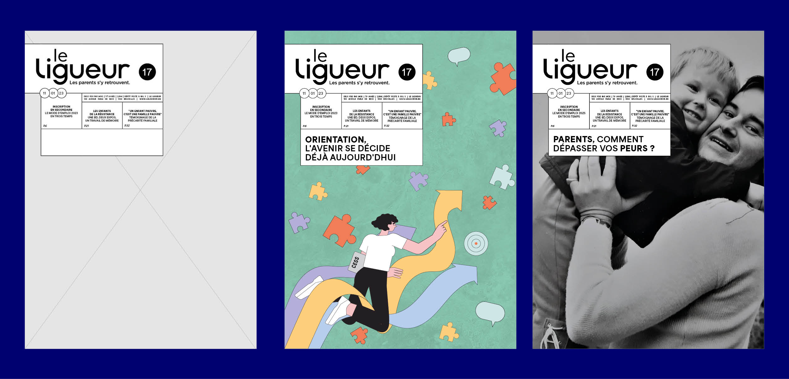
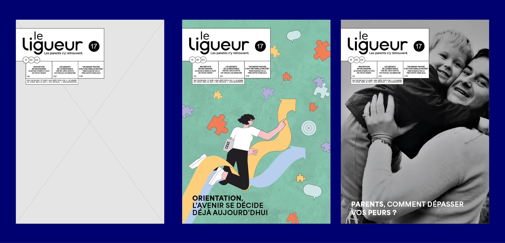
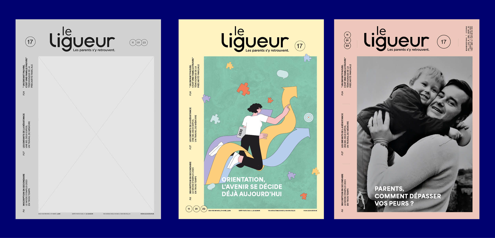
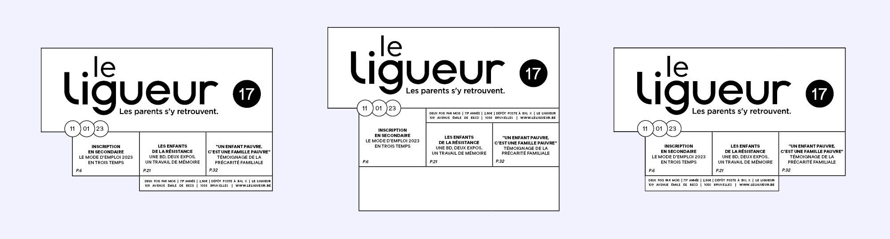
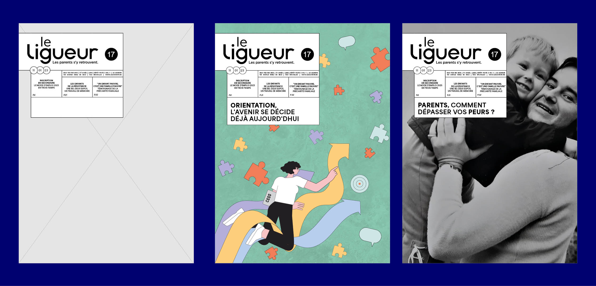
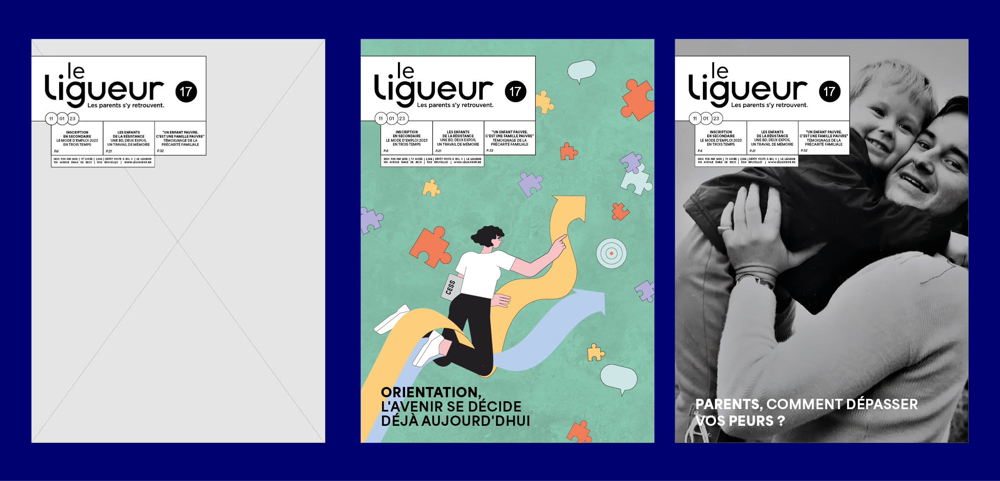
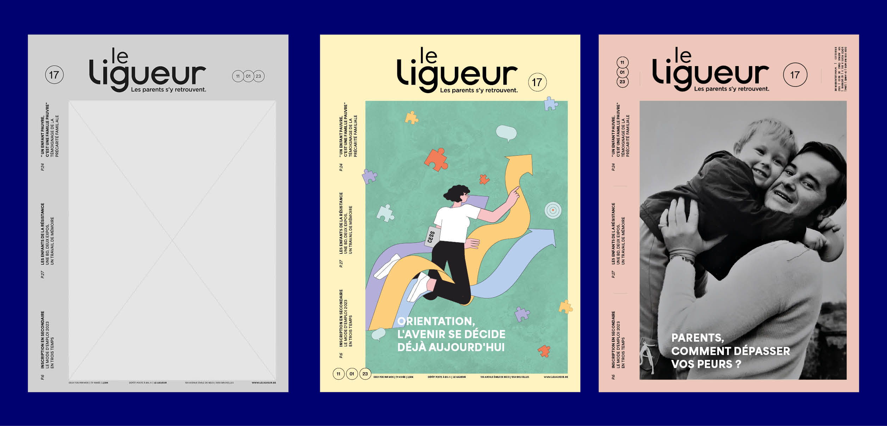

LE LIGUEUR
refonte visuelle pour la magazine Le ligueur
refonte visuelle pour la magazine Le ligueur
(2023)
mise en page
couverture
couverture
Cette refonte propose deux pistes graphiques pour moderniser les couvertures du magazine belge Le Ligueur.
La première organise les informations éditoriales dans des cartouches typographiques, assurant une lecture
claire et rapide. Cette structure met en valeur un visuel principal – illustration, photographie ou autre –
occupant la majeure partie de la page.
La seconde mise en page laisse place à un visuel en pleine page, sans éléments textuels superposés,
pour une approche plus radicale et impactante. L’identité graphique y est renforcée, en s’inspirant des
codes visuels de la presse magazine contemporaine.
 






